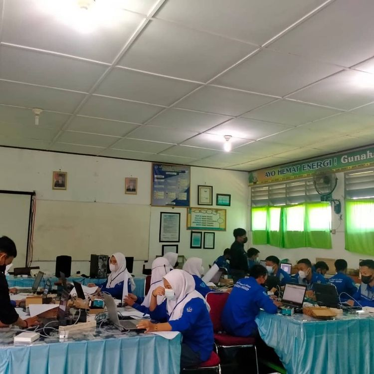
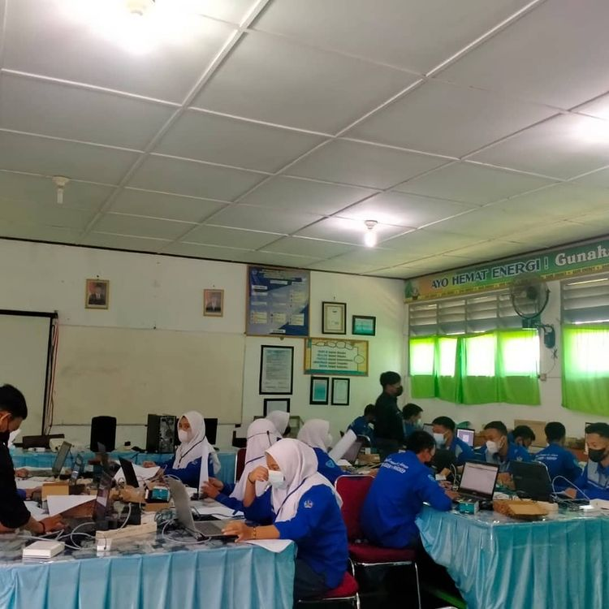

NEWS
- Saat ini SMKN 1 PANGKEP sedang menyelenggarakan program PKL bagi siswa siswinya di semua jurusan termasuk jurusan TEKNIK KOMPUTER DAN JARINGAN guna untuk meningkatkan kompetensi para siswa siswinya. Agar saat lulus dari SMKN 1 PANGKEP dapat langsung terjun di dunia kerja dengan pengalaman yang didapat selama PKL dan ilmu yang di dapat di sekolah.

- Jurusan Teknik Komputer dan Jaringan telah mengadakan Ujian Kompetensi Keahlian (UKK) sebelum mengeluarkan siswa siswinya untuk PKL.

 
